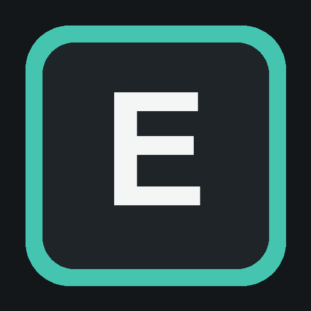

素材を集める
動画、音声、静止画をプロジェクトに読み込む。

Editra映像、音、テキストをひとつのタイムラインで。Editraで、アイデアを自分のリズムでつなげよう。
素材を読み込み、タイムラインで組み立て、プレビューで確かめる。Editraは、映像づくりの基本を落ち着いて進められるデスクトップエディターです。
できることを見る動画、音声、静止画をプロジェクトに読み込む。
クリップを並べ、分割し、テキストや効果を加える。
プレビューで確認し、MP4として出力する。
シンプルな編集フローに、作品を仕上げるための基本機能を。
複数トラックに素材を配置。移動、トリミング、分割、並べ替えをひとつの画面で。
タイトルや字幕風のテキストクリップに、位置・色・サイズ・アニメーションを設定。
明るさ、コントラスト、彩度、ぼかしなど、実装済みの効果をタイムラインに。
編集内容をプレビューで確認し、書き出しの進行状況を見ながらMP4を作成。
機能の詳細と対応範囲は、今回のOpen Betaではテンプレート機能を提供しません。
Editra v0.6.0は無料のmacOS Open Betaとして、macOS 15以降・Apple Silicon向けに準備中です。
macOS 15.0以降 · Apple Silicon arm64
Windows版は開発中です。
Linux版は今後の対応を計画しています。
初回Open BetaはmacOS 15以降・Apple Silicon arm64向けです。現在は公開ダウンロードを準備中です。
macOS 15.0+ · Apple Silicon (arm64)
この公式サイトからDMGを取得し、掲載されたSHA-256と一致することを確認してください。配布元やハッシュを確認できない場合は開かないでください。
DMGを開き、EEDT.appをApplicationsフォルダへドラッグします。
現在の配布方針ではDeveloper ID署名・Apple公証を行わない予定です。Developer ID署名・公証がなく、ad-hoc署名のみのため、macOSが開発元を確認できない警告を表示する場合があります。配布元とSHA-256を確認でき、安全性を自分で判断した場合に限り、まず一度アプリを開いてから、システム設定 > プライバシーとセキュリティ > セキュリティ欄の「このまま開く」を使い、このアプリだけを個別に許可できます。表示はmacOSのバージョンで異なる場合があります。
安全のために
Appleがマルウェアを検出した、アプリが破損・改変された、または配布元やハッシュを確認できない場合は開かないでください。Gatekeeper、SIP、Mac全体の保護設定を無効化する方法は案内しません。個別アプリの例外についてはAppleの手順を確認してください。 Appleの公式ガイド ↗
v0.6.0 · 初回Open Beta候補
対応環境：macOS 15.0以降、Apple Silicon arm64。公開前の検証・配布準備を進めています。
対応OS、配布状況、ベータ版について。
お問い合わせ窓口は、公開時にこのページで案内します。初回Open Betaの対象はmacOS 15.0以降のApple Silicon（arm64）です。macOS 12とIntel Macは対象外です。
Windows版は開発中、Linux版は計画中です。現時点ではダウンロードできる公開ビルドはありません。
プロジェクトはローカルに保存できます。メディア参照は絶対パスを使うため、別のMacやOSへ移す場合は素材の再リンクが必要になることがあります。
初回配布前の検証を継続中です。対応OS・機能範囲・既知の問題は、実際の公開ビルドに合わせてリリース情報へ追記します。